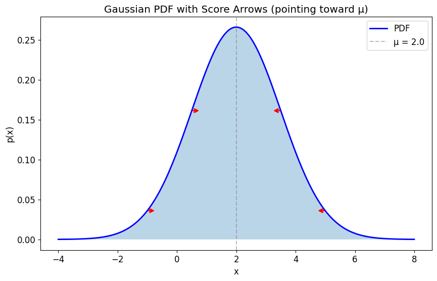

Research Log
Score of a Gaussian
The Question
Why does the score of a Gaussian point back to the mean?
Short answer: the score points in the direction of higher density, technically where the log-density increases, and for a 1-D Gaussian this is literally the direction toward the mean.
Why I Care
In diffusion/score-based models, Gaussian noise appears everywhere, and during sampling we want to know, at each step \(t\), which local direction moves our sample to a more-plausible region. The score function tells us that direction.
Setup and Definitions
We saw in the previous post that noisy samples are centered around \(x_0\). The score function tells us now how we can move a noisy sample toward that centered region around \(x_0\).
The common image to understand this concept is a mountain. Imagine you are standing at \(x_t\), a specific location on the hill at a specific moment \(t\). You want to go uphill, so you look around and find a direction upward. In one dimension, the derivative tells you if that direction is left or right. In many dimensions, you would use the gradient.
This is the core idea of the score function: we apply the derivative to the log of the conditional density \(q(x_t \mid x_0)\). We are looking for an arrow, or direction, that tells us where things look more probable. So basically, the score is a function that looks at the log of this density and says which direction increases this log-density.
You might ask: why should we use the log? Notice that the log turns multiplications into additions and divisions into subtractions, so it is easier to work with the log of the function than with the function directly. This log trick does not change the direction; it only scales the result of the gradient, as seen here:
Since \(q(x_t \mid x_0) > 0\), this changes the scale of the gradient but not its direction.
In this post, we will work with a fixed \(x_0\). So the score we are studying is really \(\nabla_{x_t}\log q(x_t \mid x_0)\), not yet the score of the full noisy-data distribution. We will also work with a 1-D Gaussian, which helps us hone in on the intuition we need to grasp these models from first principles.
Going back to the mountain example, picture yourself now on a 1-D Gaussian bell. Here things should click more easily: going uphill means going toward the only, and therefore highest, peak of the bell, which is the mean.
This is not guaranteed for a general distribution. If the distribution is multimodal, the score still points locally uphill. Following it may lead to a nearby local mode rather than the global mode, and it does not need to point toward the mean at all.
With that in mind, let's remember the density of a 1-D Gaussian, now written as the conditional corruption distribution:
And let's define the score as:
Minimal Derivation
Take the same conditional density:
Take log:
This is the same as substituting \(x = x_t\) and \(\mu = x_0\) in the usual 1-D Gaussian. Now differentiate with respect to \(x_t\):
What I Think I Learned
The score helps us find the region where more plausible samples live. In a 1-D Gaussian, this is the center of the distribution.
| Condition | Score sign | Interpretation |
|---|---|---|
| \(x_t > x_0\) | \(s(x_t, x_0) < 0\) | Points left, toward \(x_0\) |
| \(x_t < x_0\) | \(s(x_t, x_0) > 0\) | Points right, toward \(x_0\) |
| \(x_t = x_0\) | \(s(x_t, x_0) = 0\) | Already at the mode |

Let's also think about the scaling factor \(\frac{1}{\sigma^2}\) in \(s(x_t, x_0) = \frac{x_0 - x_t}{\sigma^2}\). The term \(x_0 - x_t\) tells us which way the score points; the factor \(\frac{1}{\sigma^2}\) controls how strongly. For the same distance from \(x_0\), a larger variance makes the log-density flatter, so the score has smaller magnitude. A smaller variance makes it steeper, so the score has larger magnitude.
Open Questions
- What does the score field look like for a multimodal distribution?
- What changes in many dimensions?
- What if we cannot calculate the score analytically?
- How is this related to \(\mathbb{E}[x_0 \mid x_t]\), the posterior mean of the clean sample?